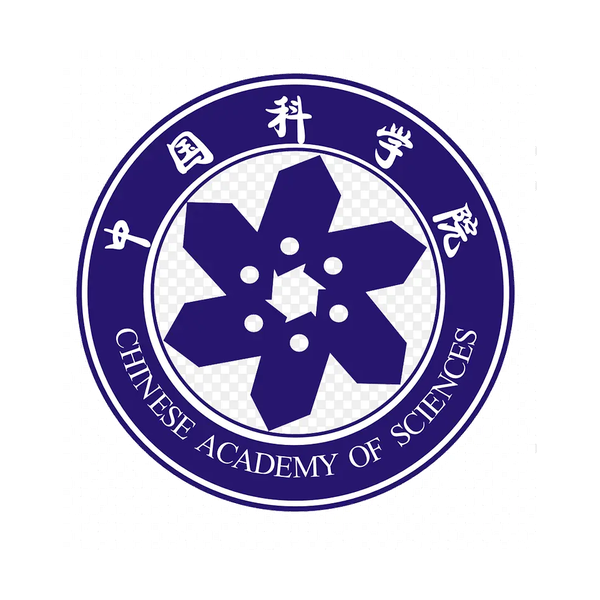
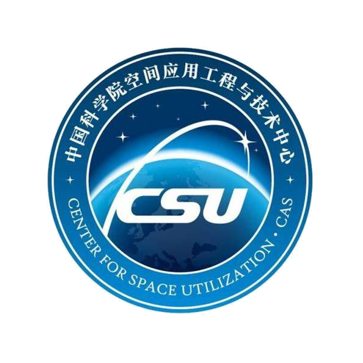
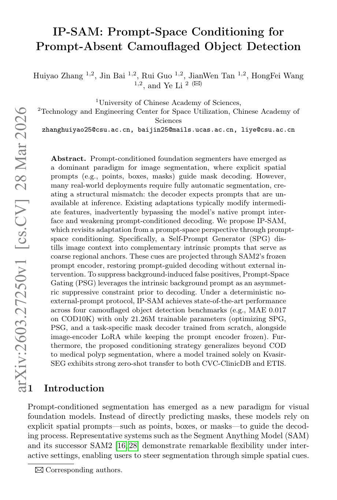
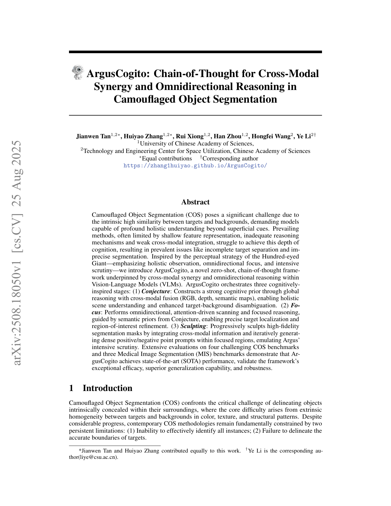
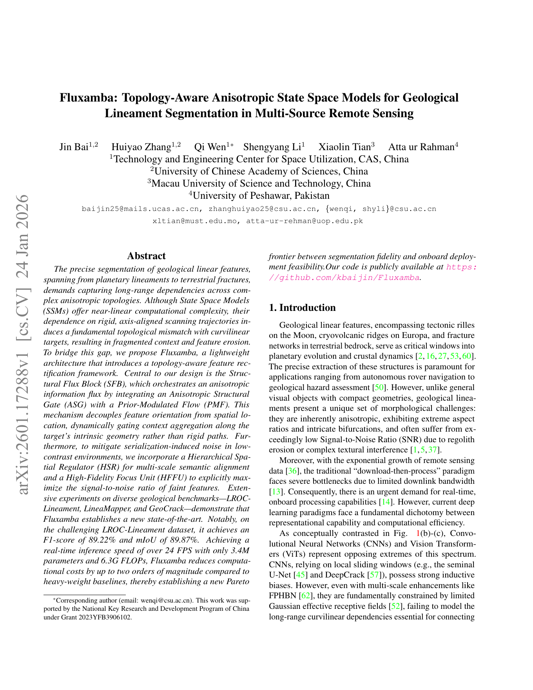
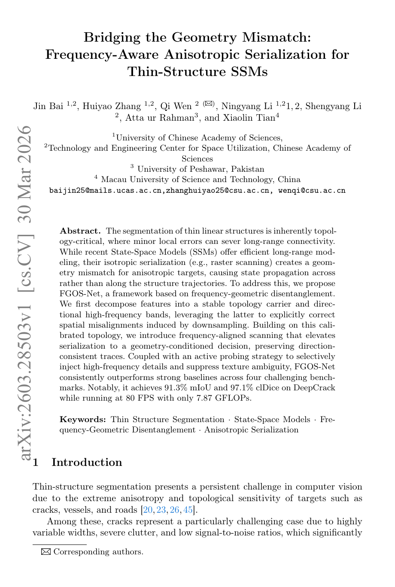
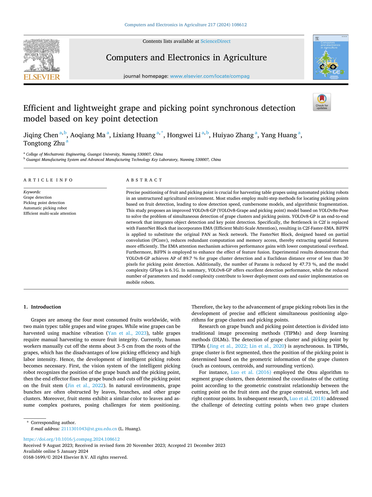
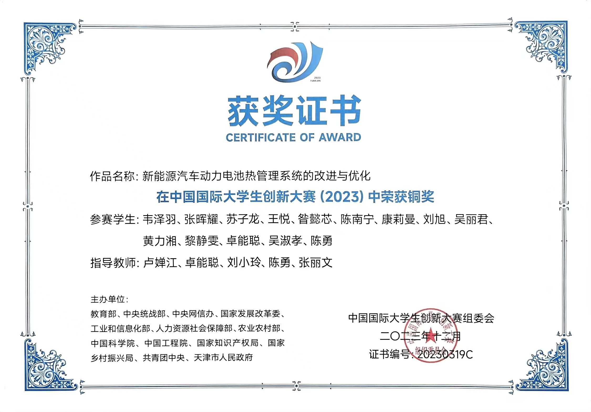
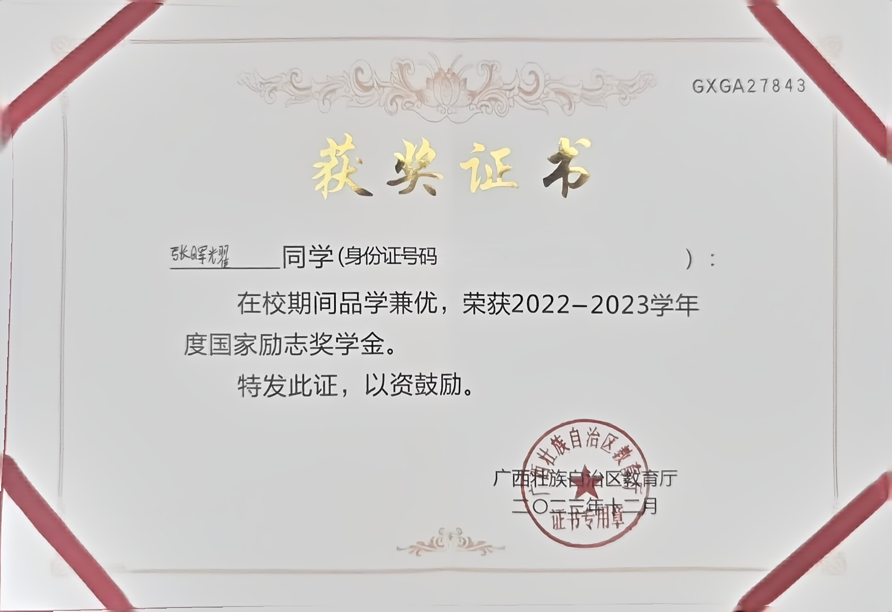

04/2026
🎉I am currently interning at TeleAI, focusing on multimodal reasoning, MLLM post-training, and evidence-aware decision interfaces.
🎓 Master's Student at UCAS · 🔬 Research Intern at TeleAI · 🧠 MLLM Reasoning & Post-training
Hi! I am Huiyao Zhang (Chinese name: 张晖耀), currently a Master’s student in Computer Technology at the University of Chinese Academy of Sciences (UCAS), supervised by Prof. Ye Li. I am also a research intern at TeleAI, working with Chuyi Wang on multimodal reasoning and post-training for MLLMs. Before that, I received my bachelor’s degree in Mechatronic Engineering from Guangxi University.
My research focuses on Multimodal Large Language Models (MLLMs), Visual Agents, and efficient foundation architectures such as Mamba / SSM, with particular interest in multimodal reasoning, visual evidence consumption, and reliable decision-making in vision-language systems.
My recent work spans multimodal understanding, promptable foundation model adaptation, cross-modal reasoning, agent-style visual systems, and topology-aware sequence modeling. I have led or co-led multiple projects in these areas, and submitted multiple papers to venues such as AAAI, CVPR, ECCV, and IJCAI. My research topics include prompt-space conditioning for prompt-absent segmentation, multi-granularity reasoning for camouflaged object understanding, multimodal agent-style reasoning, and structured visual modeling with Mamba-based architectures.
At TeleAI, my current research mainly centers on multimodal reasoning and MLLM post-training, especially how visual evidence can be more reliably extracted, organized, and consumed by the final decision layer. More specifically, I am interested in building evidence-aware decision interfaces that allow multimodal models to use visual information in a more selective, grounded, and controllable way.
Beyond research, I have received multiple national and international awards, including a National Silver Award in the Challenge Cup, two National Bronze Awards in the China International College Students’ Innovation Competition, an iGEM Bronze Medal, and a National Honorable Mention in the Zhou Peiyuan Mechanics Competition. These experiences shaped my interdisciplinary background across engineering, computer vision, and multimodal AI.
目前我在中国科学院大学攻读计算机技术硕士，导师为李叶老师，同时在 TeleAI 跟随王楚轶老师开展多模态推理与 MLLM post-training 方向的研究。我本科毕业于广西大学机械电子工程专业。 目前主要关注 MLLM、Visual Agents 以及 Mamba/SSM 等高效基础架构，尤其关注视觉证据如何被更可靠地抽取、 组织并服务于最终决策。
I am currently working at TeleAI on multimodal reasoning and MLLM post-training, with a particular interest in evidence-aware decision interfaces for reliable vision-language decision making. If you would like to discuss research or collaboration, feel free to reach out by email.
目前我在 TeleAI 主要研究多模态推理与 MLLM post-training，重点关注证据感知式决策接口、 视觉证据组织与可靠决策。欢迎交流科研合作。

Master’s student in Computer Technology, supervised by Prof. Ye Li.
Current training centers on multimodal large models, visual agents, automatic segmentation, and reliable vision-language decision making.
B.Eng. in Mechatronic Engineering.
Built an interdisciplinary background across engineering, computer vision, robotics projects, academic competitions, and research-oriented system development.
Research Intern, working with Chuyi Wang.
Focused on multimodal reasoning and post-training for MLLMs, especially evidence-aware decision interfaces, visual evidence organization, and grounded final-layer decision making.

Research collaboration during graduate study.
Working on camouflaged object understanding, promptable foundation model adaptation, multimodal reasoning, and topology-aware sequence modeling with Mamba/SSM.

arXiv preprint, 2026 · First author · Under review

arXiv preprint, 2025 · Co-first author · Under review

arXiv preprint, 2026 · Major contributor · Under review

arXiv preprint, 2026 · Major contributor · Under review

Computers and Electronics in Agriculture, 2024 · SCI Q1 journal paper

Challenge Cup, 2023

Innovation Competition, 2023
Zhou Peiyuan Mechanics Competition, 2023
Guangxi Zhuang Autonomous Region, 2024

Ministry of Education system, 2023

Excellent Completion, 2024
I enjoy reading books and papers, watching films and anime, and going for night runs. In my free time, I also like badminton 🏸, basketball 🏀, and exploring new ideas in both research and daily life. I hope I can keep building intelligent systems with the same curiosity and passion that I bring to life. 🤖✨